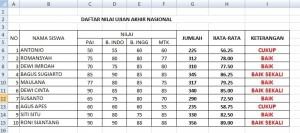
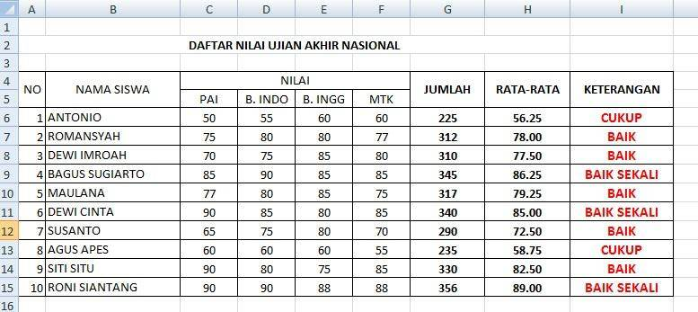
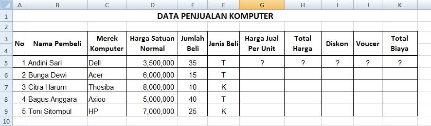
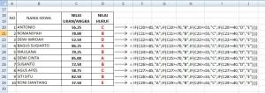
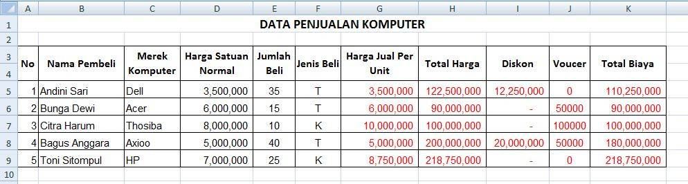
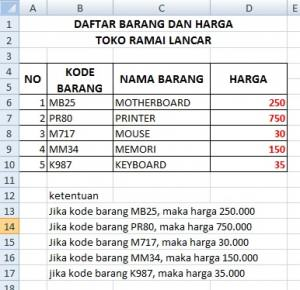

IF bertingkat dan kombinasi AND, OR
Untuk lebih dari dua kemungkinan, letakkan IF di dalam IF. AND dan OR membantu menggabungkan beberapa syarat.
=IF(syarat1; hasil1; IF(syarat2; hasil2; hasil_lain))
| AND(a; b) | Benar bila semua syarat benar |
|---|---|
| OR(a; b) | Benar bila salah satu benar |
Langkah praktik
- Urutkan syarat dari yang paling ketat atau paling tinggi.
- Contoh predikat: =IF(B2>=85;"A";IF(B2>=75;"B";IF(B2>=65;"C";"D"))).
- Untuk dua syarat sekaligus: =IF(AND(B2>=75;C2>=75);"Lulus";"Gagal").
- Periksa jumlah kurung buka dan kurung tutup sama banyak.
Tips
Excel 2007 ke atas mengizinkan sampai 64 tingkat IF; sebelumnya hanya 7.
Fungsi IFS (Excel 2019 ke atas) menyederhanakan IF bertingkat.
Tangkapan layar praktik





